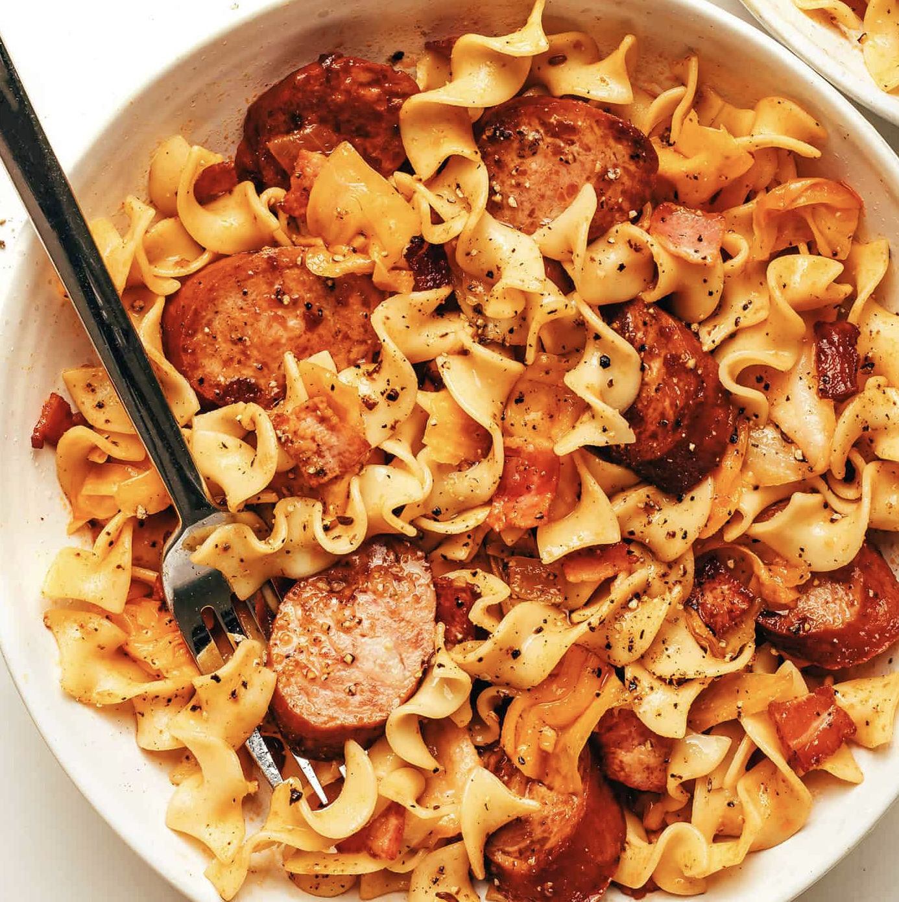

About This Recipe
This recipe is simple, affordable and doesn't take a lot of time to make. It is a great option when you want a filling meal without spending too much money.
Ingredients
- 1 package of egg noodles (12 oz.)
- 1 package of kielbasa sausage
- 2 tablespoons butter
- 1/2 teaspoon garlic powder
- 1/2 teaspoon black pepper
- 1/2 teaspoon salt
- 1/4 cup grated Parmesan cheese (optional)
Instructions
- Bring a large pot of water to a boil.
- Add the egg noodles and cook according to the package directions.
- Drain the noodles and set them aside.
- Cut the kielbasa into small slices.
- Melt the butter in a large skillet over medium heat.
- Add the kielbasa and cook until lightly browned.
- Add the garlic powder, salt and black pepper.
- Add the cooked egg noodles to the skillet and stir everything together.
- Cook for another 2-3 minutes until heated through.
- Top with Parmesan cheese if desired and serve warm.